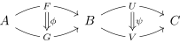

Well scoped lambda terms
In [1], I stumbled upon the following type declarations1:
data Var a = Z | S a deriving (Show, Functor) data Term a = V a -- Variable references | Abs (Term (Var a)) -- λ abstraction | App (Term a) (Term a) -- Function application deriving (Show, Functor)
This made me finally understand the "Syntax is an endofunctor on the category of substitutions" point of view. In this post, I will try to condense as much as possible the parts I would have needed to understand it sooner.
1. The anatomy of the term
This datatype defines the syntax of well-scoped untyped λ-calculus terms where the free variables live in an alphabet \( a \). What we mean by "alphabet" is that if you had the following data type:
data ABC = A | B | C
Then you would be able to access three different variables from a term.
t :: Term ABC t = App (V A) (V B)
Notice, however, the Var type constructor. This type is necessary
to be able to take an alphabet of free variables (like ABC) and add
a new fresh value to it.
type ABCZ = Var ABC fresh :: ABCZ fresh = Z -- The new variable added by `Var`.
This fresh value is necessary for the Abs term to be able to "bind"
a variable, removing it from the set of free variables.
2. Renaming and substitution
The \( \alpha \)-renaming operation in λ-calculus is used to change the name of variables without changing the meaning of the term. It is necessary (in some encodings of λ-calculus) to do renaming to ensure there are no variable name clashes after substitution. For instance, we can see that, except for the names of the variables, the following terms are identical.
\begin{equation*} \begin{aligned} \lambda f. \lambda x. f(x)(x) \\ \lambda g. \lambda y. g(y)(y) \\ \end{aligned} \end{equation*}
When two terms like these are equivalent after some renaming of the variables,
we say they are \( \alpha \)-equivalent. One interesting thing about this
presentation of λ-terms is the fact that the "renaming" operation that one will
often see when dealing with λ-calculus is simply the functorial action of
Term on free variables:
rename :: (a -> b) -> Term a -> Term b rename = fmap
This was very surprising to me, because the correct treatment of bound(by a
Abs term) variables is always slightly annoying (because of
shifting) to implement. The fact that this renaming is simply an instance of a
larger and common pattern (functors) is conceptually beautiful.
Normally, to implement renaming, we would need a function
renameShift :: (a -> b) -> Var a -> Var b that injects the renaming
function to a domain and codomain with one more variable. However, here, this is
done by the functorial action of the Var type of the
Abs constructor.
Another operation that is necessary when manipulating \( \lambda \)-terms is substitution. Here is its type signature.
sub :: (v1 -> Term v2) -> Term v1 -> Term v2
The substitution operation takes a term with free variables in \( v_1 \), and substitutes each of those free variables for terms with free variables in \( v_2 \). Here, \( v_1 \) could be equal to \( v_2 \) (this is simply a renaming), \( v_2 \) could be an empty set (meaning the term is closed) and \( v_2 \) could even be a subset of \( v_1 \). This operation is very general as we will see later.
The first two branches of this function are easy to write. We simply apply the
substitution when we encounter a reference and recur on Apps.
sub s (V ref) = s ref sub s (App a b) = App (sub s a) (sub s b)
This branch is harder to write, because needs to correctly treat bound variables
in Abs. We will use a helper function shiftSub to
ignore variables that are bound by this Abs term and shift (extend
the free variable set) the terms that are substituted into its body.
sub s (Abs body) = Abs (sub (shiftSub s) body)
This one lets us "lift" our substitution to a context with one more free variable.
shiftSub :: (a -> Term b) -> Var a -> Term (Var b) -- If this variable is bound by the `Abs`, we must not touch it shiftSub f Z = V Z -- If it is not, we must compute its replacement and shift it. shiftSub f (S r) = rename S (f r)
3. An example of what a term would look like
A very useful way of encoding variable references is through De-Bruijn indices.
However, here, we use De-Bruijn indices only for bound variables, letting the
user use (for instance) String as a free variable type or even
Null to signal the absence of free variables. Here is what it looks
like:
-- Example data Null deriving Show body :: Term (Var Null) body = (App (V Z) (V Z)) func :: Term Null func = Abs body x = sub (const func) body
4. \( \lambda \)-terms are monads
If we look back at the signature of our sub function. We notice it
has (apart from the order of the arguments) the same shape as the
>>= operator. Indeed, if we implement return, we have
a monad.
termRet :: a -> Term a termRet = V
The fact our \( \lambda \)-calculus term is actually a monad is a specific case of a larger phenomenon: Algebraic syntax trees with variables are monads. Notice that we could have defined a syntax tree (with free variables \( v \)) for some semiring:
data Semiring v = Zero | One | Add (Semiring v) (Semiring v) | Mul (Semiring v) (Semiring v) | Sref v deriving (Functor)
The substitution would have been2:
srSub :: (v1 -> Semiring v2) -> Semiring v1 -> Semiring v2 srSub f Zero = Zero srSub f One = One srSub f (Add a b) = Add (srSub f a) (srSub f b) srSub f (Mul a b) = Mul (srSub f a) (srSub f b) srSub f (Sref v) = f v
When you have such a monad (with type constructor \( T \)), when the
substitution operations respect certain coherence conditions and when you also
have some alphabet a such that f :: T a -> a (think of
the alphabet not as an alphabet of variables, but as elements of a concrete
set), you get what category theorists call a \( t \)-algebra.
5. λ-calculi as monads with extra structure
This way of characterising untyped λ-calculi is explored in the paper [2]. In that paper, a (notice there can be many) λ-calculus is a functor with:
- A substitution operation that makes it a monad.
- Natural transformations that embody λ abstraction (
Abs) - Certains identities (commutative diagrams) on these natural transformations.
Let's call the Term monad \( t \). Then, we have polymorphic
function (natural transformation) \( \eta_v : id(v) \to t(v) \) which is just
Var and we also have \( \mu_v : t(t(v)) \to t(v) \) which is just
(>>= id). Now that we are working with functors and their
compositions, we can drop the arguments of \( t \). The monad laws are expressed
by the following commuting diagrams:
Figure 1: The monad associativity law: μ is associative
Figure 2: The monad unitality law: the result of η is the left and right identity on μ.
5.1. An aside on horizontal composition
In the following section, you will see that I use the notation \( t \mu \) where \( t \) is a functor and \( \mu \) a natural transformation. What does it mean?
Recall the commuting diagram which defines a natural transformation.
Here, \( G, H : C \to D \) are functors, \( x, y : C \) are objects in the source category, \( f : X \to Y \) is a morphism and \( \phi_{i : C} : G(i) \to H(i) \) is a family of morphisms. This family is a natural transformation if for any \( x, y \) the following diagram commutes:
Figure 3: The naturality square
Moreover, suppose we have four functors
\begin{equation*} \begin{aligned} F : A \to B \\ G : A \to B \\ U : B \to C \\ V : B \to C \\ \end{aligned} \end{equation*}and two natural transformations
\begin{equation*} \begin{aligned} \phi : F \Rightarrow G \\ \psi : U \Rightarrow V \\ \end{aligned} \end{equation*}We can create a new natural transformation \( UF \to VG \) in two ways:
\begin{equation*} \begin{aligned} \rho_{x} &= V(\phi_{x}) \circ \psi_{F(x)} \\ \theta_{x} &= \psi_{G(x)} \circ U(\phi_x) \\ \end{aligned} \end{equation*}If we write down those two candidates in a diagram,
Figure 4: The diagram is (up to a renaming of variables) identical to the naturality square.
We realise it has the shape of the naturality square and that those two ways of combining \( \phi : F \Rightarrow G \) and \( \psi : U \Rightarrow V \) into \( \sigma : UF \Rightarrow VG \) (called the Godement product) are actually identical! The associativity of this product means that when doing the same thing for 3+ natural transformations, we don't need to specify the order of composition. The Godement product is sometimes called horizontal composition, because of the way it looks in a commuting diagram.

Figure 5: The arrows are composed parallelly instead of sequentially.
But what about the explanation for the weird \( t \mu \) syntax that was promised? When we "compose" a natural transformation with a functor this way, we usually use it as a shorthand for \( \text{id}_t \mu \) where we don't do anything to the outer functor layer, but apply \( \mu \) to the inner layer.
5.2. The extra structure
Now that we've established that our categorical construction must be a monad (it must enjoy substitution, after all) to be a lambda calculus, let's explore the other properties it must have.
5.2.1. Var and Abs
If we isolate the type signature of the Abs constructor
Abs :: Term (Var x) -> Term x
we see that this constructor is parametric (it doesn't look at the
x inside). Another word for parametricity is naturality and we can
express the existence of this constructor through a functor and a natural
transformation.
5.2.2. \( t \) algebras
Here, \( (-)^* \) adds (like Var a new free variable) and \( \lambda \)
is the "abstraction" constructor. We read \( t^* \) as "a term with an extra
free variable".